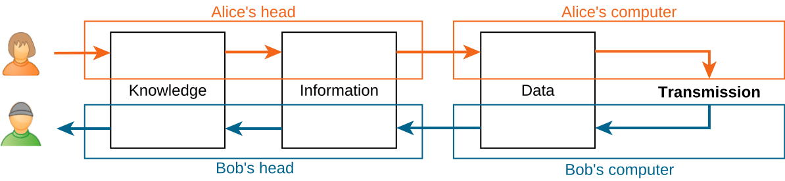
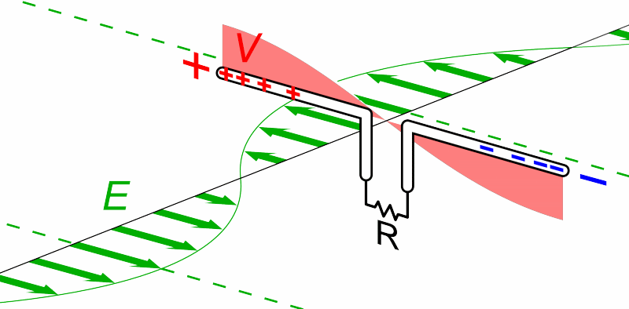
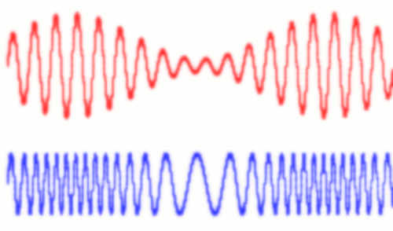

[2] El velo analógico-digital¶
Enviamos y recibimos mensajes constantemente en nuestras esferas personal, profesional y política. La disponibilidad casi instantánea de prácticamente cualquier información que deseemos es una característica clave de la era actual. Cuando usamos un ordenador de cualquier tipo para compartir u obtener conocimiento, primero hay que transformarlo en datos que puedan entender tanto los humanos como los ordenadores. Podemos imaginarlo como una secuencia de pasos:

Los ordenadores trabajan con datos digitales y transmiten secuencias de símbolos binarios (les solemos llamar 0 y 1). Sin embargo, la transmisión sucede en el mundo físico donde 0 y 1 son ideas y no objetos tangibles.
Este capítulo estudia cómo esos símbolos digitales atraviesan el velo del mundo digital al analógico (físico) en la transmisión, y de vuelta del analógico al digital en la recepción.
[2.1] Información ↔ Datos ↔ Mensajes binarios¶
Conocimiento, información y datos no son lo mismo, aunque a menudo se usen indistintamente. En contextos técnicos, deben usarse e interpretarse con precisión.
Ejercicio 2.1
Supón que estamos al aire libre y queremos contarle a un amigo qué tiempo hace. Tenemos conocimiento sobre todo lo relacionado con el tiempo, porque estamos allí. Para comunicarnos, necesitamos centrarnos en una parte de ese conocimiento y decidir qué información enviar. Por ejemplo, podríamos querer comunicar la temperatura y decir algo como “la temperatura es de unos 22ºC”. Hay muchas formas de almacenar esa información como datos dentro de un ordenador. Lo más probable es que representemos el número \(22\) como parte de esos datos. ¿Cómo definirías conocimiento, información y datos?
Aunque hay muchos tipos de dato (numéricos, textuales, visuales, científicos, etc.), todos se representan mediante números. Por ejemplo, se podría usar la codificación ASCII para representar la cadena “Bobby” como la siguiente secuencia: \(66, 111, 98, 98, 121\).
Dentro de un ordenador, esos números se almacenan en registros binarios, p. ej. en la CPU y en la RAM. Hay múltiples formas de representar datos numéricos en formato binario. En concreto, debemos prestar mucha atención como mínimo a los siguientes aspectos siempre que leamos o escribamos datos:
-
¿entero o con decimales?
-
¿profundidad de bits? (p. ej. 8 bits por número)
-
¿con signo o sin signo?
-
Para números de varios bytes: ¿big endian o little endian?
-
Para números con decimales: ¿coma flotante o coma fija?
Ejercicio 2.2
Explica cómo completar la segunda fila a partir de la primera (y viceversa), y qué suposiciones necesitas hacer en cada caso.
| Decimal | \(7\) | \(2\) | \(-3\) | \(0.75\) | \(260\) | |
|---|---|---|---|---|---|---|
| Binario | 00111 |
00000010 |
1101 |
1100 |
0000 0100 0000 0001 |
¿Y qué hay de à \(\leftrightarrow\) 1100 0011 1010 0000?
A veces necesitamos inspeccionar el contenido de un registro binario (p. ej. para depuración u otros fines de análisis) o establecer ese contenido manualmente. Para los humanos, manejar cadenas binarias de más de unos pocos bits es incómodo y muy propenso a errores. Cuando necesitamos inspeccionar o modificar el contenido de un registro binario (p. ej. para depuración), a menudo usamos la base \(16\), es decir, la notación hexadecimal.
En hexadecimal hay exactamente \(16 = 2^4\) dígitos distintos (0 a 9, a a f) con valores decimales de \(0\) a \(15\), cada uno de los cuales representa exactamente \(4\) bits. Cuando escribimos valores hexadecimales para un ordenador, es decir, en código fuente, los valores hexadecimales suelen ir precedidos de 0x, p. ej. 0x58a5b0. Del mismo modo, las expresiones binarias van precedidas de 0b, p. ej. 0b0011.
Nota
-
Los espacios, e incluso los saltos de línea, entre dígitos no tienen ningún significado; solo se usan para facilitar la inspección visual.
-
En algunos textos, cuando en un contexto pueden aplicarse varias bases, estas se indican como subíndices, como en
58a5b0\(_\textrm{16}\) y0011\(_\textrm{2}\).
Ejercicio 2.3
Considera el siguiente mensaje, compuesto por una concatenación de enteros sin signo de 3 bits: a4 3f 20.
-
¿Cuántos bits y bytes de longitud tiene?
-
¿Cuáles son los cinco primeros enteros contenidos en el mensaje?
La mayoría de las veces dejaremos que nuestro código se encargue de manipular los datos. Para ello, necesitamos operaciones a nivel de bits y de lógica booleana como las siguientes
| Operación | AND (bits) | AND lógico | OR (bits) | OR lógico | Despl. izq. | Despl. der. |
|---|---|---|---|---|---|---|
| Python | & |
and |
| |
or |
<< |
>> |
Otras herramientas útiles de python son las funciones bin() y hex(), que convierten un entero en su representación binaria y hexadecimal, respectivamente, e int(), que puede analizar una cadena que describe un número y devolver ese número. También podemos controlar el formato con el que mostramos los números; p. ej. print(f'{n:08b}') imprimiría el valor de la variable n en forma binaria, usando al menos 8 posiciones y rellenando con ceros las posiciones iniciales vacías (más información en la documentación de python).
Ejercicio 2.4
Considera el código que se muestra a continuación. Los números que imprime al ejecutarse tienen una importancia especial en redes y en informática. ¿Qué tienen en común? (Pista: quizá quieras modificar el código para mostrar sus representaciones binarias).
snippets/bitwisemanipulation.py
a = 0xff
print(a)
for _ in range(8):
a = (a << 1) & 0xff
print(a)
255
254
252
248
240
224
192
128
0
[2.2] Analógico ↔ Digital¶
Una vez decidimos qué bits transmitir, necesitamos encontrar una forma de hacer que esos bits lleguen a otra máquina a distancia. Primero, tenemos que decidir qué medio usar y qué propiedades físicas podemos controlar y monitorizar. Entre las opciones más populares están usar el voltaje en cables de cobre, enviar luz por fibra óptica y manipular el campo electromagnético mediante antenas.
Ejercicio 2.5
Reflexiona:
-
¿Podemos hacer un cable de cobre tan largo como queramos?
-
¿Qué medio usan las conexiones Wi-Fi?
-
¿Necesitamos fibras ópticas para realizar comunicaciones basadas en la luz?
Si optamos por cables de cobre, podemos poner varios en paralelo y enviar más datos a la misma velocidad de reloj. Esto, sin embargo, tiene el precio de una complejidad y un coste mayores que los diseños en serie. Pueden producirse interferencias de voltaje en las líneas de datos por diversos motivos, incluidos fenómenos físicos como la inducción electromagnética en el cable. No obstante, los cables que cumplen los estándares modernos de transmisión de datos (p. ej. IEEE 802.3) suelen emplear pares trenzados de cables y apantallamiento, entre otras estrategias, para garantizar errores de bit por debajo de \(1\) de cada \(10^{12}\) bits.


¿Alguna vez has buceado en una piscina, has mirado hacia arriba y el agua parecía un espejo? Los cables de fibra óptica funcionan gracias a este fenómeno, llamado refracción. La luz que entra en la fibra por un extremo permanece dentro hasta que sale por el otro. El recubrimiento de la fibra es importante para preservar su integridad, pero no participa en el “rebote” de la luz mientras avanza por la fibra.
En una fibra óptica monomodo, el sensor del extremo receptor detecta la presencia o ausencia de un único rango de longitudes de onda. Estos cables son relativamente finos y baratos, pero transportan una sola señal. Otra opción es transmitir varias longitudes de onda (p. ej. usando varias fuentes láser) al mismo tiempo, por la misma fibra. En el extremo receptor, se usa un prisma para volver a dividir el haz de luz en sus componentes monocromáticos, que se detectan por separado. De este modo, la fibra óptica multimodo permite multiplexar varias señales, lo que aumenta enormemente la velocidad efectiva de transmisión.
Ejercicio 2.7
Cuando un haz de luz entra en una fibra óptica, lo hace con un cierto ángulo de ataque. Este ángulo afecta al tiempo que tarda en llegar al otro extremo. Si proyectamos un cono de luz, la luz entra en la fibra con múltiples ángulos de ataque. ¿Qué ocurre en el otro extremo si encendemos y apagamos este cono de luz muy rápidamente? ¿Importa si usamos haces monomodo o multimodo?



Aunque hay muchas clases de antenas, su propósito principal es detectar campos electromagnéticos y/o crearlos. La ecuación de Maxwell-Faraday nos dice que los cambios en el campo eléctrico \(\vec{E}\) crean un campo magnético perpendicular \(\vec{B}\), y viceversa.
Una antena de dipolo como la de la derecha aprovecha este concepto aplicando un voltaje alterno \(V\), que genera ondas electromagnéticas que se propagan hacia fuera desde el eje del dipolo.
Nota
Cuando emitimos una energía \(E\) desde un punto en todas las direcciones, esa energía se distribuye sobre una esfera creciente. Como el área de una esfera de radio \(r\) es \(4 \pi r^2\), la cantidad de energía que llega a un punto a distancia \(r\) será del orden de \(E / r^2\).
Esto se conoce a veces como la ley de la inversa del cuadrado, y es la razón por la que las corrientes inducidas en la antena del receptor suelen estar entre nanovoltios (\(10^{-9}\) V) y picovoltios (\(10^{-12}\) V). Sorprendentemente, esto basta para que los detectores modernos lean la señal de datos.

Independientemente del método elegido para que viajen los datos, sigue siendo necesario atravesar el velo entre las señales analógicas y los datos digitales. Una forma de hacerlo es la modulación: se produce una señal sinusoidal base llamada portadora, y los datos se codifican modificando esta portadora. Por ejemplo, se puede cambiar la amplitud de la portadora (ASK), su frecuencia (FSK), o incluso la amplitud y la fase al mismo tiempo (QAM).
Ejercicio 2.8
La figura anterior muestra un ejemplo de modulación en amplitud y otro de modulación en frecuencia. ¿Cuál es cuál? Para cada caso: ¿esa modulación transmite una señal analógica o digital?
Ejercicio 2.9
¿Cuál es la diferencia entre ancho de banda y velocidad de transmisión? ¿Por qué crees que se usan indistintamente en contextos no técnicos?